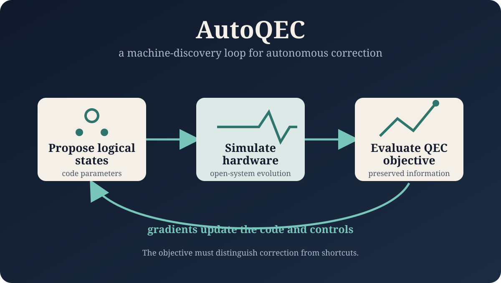

Can a quantum memory protect itself? Notes on AutoQEC at Stanford
What I learned from Zelong Yin’s Q-FARM talk on machine discovery of autonomous quantum error-correction schemes—and why the optimization objective matters.

Can a quantum memory protect itself?
At Stanford Q-FARM, I attended Zelong Yin’s talk, “Machine Discovery of New Autonomous Quantum Error Correction Schemes,” with work by Zelong Yin, David Schuster, and Amir Safavi-Naeini. The talk introduced AutoQEC, a machine-discovery framework for designing autonomous quantum error-correction schemes.
Active correction versus autonomous correction
Standard active quantum error correction repeatedly measures checks and applies feedback. Those checks may be comparatively straightforward to implement, but the ancillas and feedback introduce cost and possible errors. Autonomous QEC aims to engineer the dynamics and dissipation so that the system corrects errors continuously, without the same measurement-and-feedback loop. The tradeoff is that the required dissipation and controls can be difficult to design.
The Gottesman–Kitaev–Preskill code was a central example. GKP states are attractive because of their protection against displacement errors in both quadratures, but stabilizing them autonomously creates a demanding design problem.
How AutoQEC searches the design space
The framework begins by proposing logical states, simulates their evolution under a hardware model, and evaluates a quantum error-correction objective—such as idling fidelity, purity, or preserved information. Backward evolution then supplies gradients that can update both the logical code and the time- or frequency-dependent controls.
The full model in the talk used a Universal Lindblad Equation framework, allowing the optimization to include a hardware model, environmental coupling, and trainable bath properties rather than treating the code independently of its physical implementation.
When an optimizer finds the wrong answer
One of the most useful parts of the talk was the discussion of failure modes. If the loss function asks only for high fidelity after photon loss, an optimizer may learn to reduce the number of photons instead of correcting the error. It can also overfit to the specified error, discover an echo-like mitigation strategy, or settle on a trivial solution.
A successful optimization result is not automatically an error-correcting code; the objective must reward the behavior we actually want.
A machine-discovered stabilization mechanism
For a flux-pumped bosonic-mode model, AutoQEC found a stabilization mechanism involving strong driving, a non-rotationally symmetric code, protected Floquet eigenstates, and an effective phase-space attractor. The talk also connected the result to circuit implementation and explored the framework’s generality through star-code behavior.
My takeaway
This talk gave me a concrete example of how learning-based optimization can contribute to quantum error correction. AutoQEC is gradient-based rather than reinforcement learning, but the broader research question is closely related to my interests: how can an algorithm search a complex physical design space while remaining constrained by the hardware and by the behavior we truly need?
I left with a stronger appreciation for both sides of the problem—the promise of machine-assisted discovery and the care required to specify the right objective.